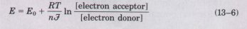
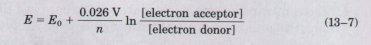
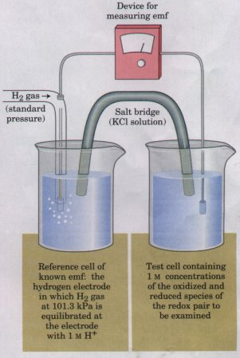
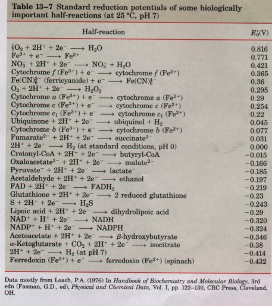
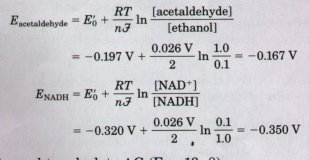

Reduction Potentials Measure Affinity for Electrons
| When two conjugate redox pairs are
present together in solution, electron transfer from the
electron donor of one pair to the electron acceptor of
the other may occur spontaneously. The tendency of such a
reaction to occur depends upon the relative affinity of
the electron acceptor of each redox pair for electrons.
The standard reduction potential, Eo, a measure of this
affinity, is determined in an experiment such as that
described in Figure 13-15. Electrochemists have chosen as
a standard of reference the half reaction H+ + e-  2H2 2H2
The electrode at which this half reaction occurs is
arbitrarily assigned a standard reduction potential of
0.00 V. When this hydrogen electrode is connected through
an external circuit to another half cell in which the
oxidized and reduced species are both present at standard
concentrations (each solute at 1 M, each gas at 1 atm),
electrons will tend to flow through the external circuit
from the half cell of lower standard reduction potential
to the half cell of higher standard reduction potential.
By convention, the half cell with the stronger tendency
to acquire electrons is assigned a positive value of E0
(in volts).
The reduction potential of a half cell depends not
only upon the chemical species present but also upon
their activities, approximated by their concentrations.
About a century ago, Walther Nernst derived an equation
that relates standard reduction potential (E0) to
reduction potential (E) at any concentration of oxidized
and reduced species in the cell:

where R and T have their usual meanings (Table 13-1),
n is the number of electrons transferred per molecule,
and F is the Faraday constant, 96.48 kJ/V•mol. At 298 K
(25 °C), this expression reduces to:

Many half reactions of interest to biochemists involve
protons. As in the definition of ΔG°', biochemists define
the standard state for oxidation-reduction reactions as
pH 7 and express reduction potential as E'0, the standard
reduction potential at pH 7. The values for standard
reduction potentials given in Table 13-7 and used
throughout this book are for E0 and are therefore only
valid for calculations involving systems at neutral pH.
Each value represents the potential difference when the
conjugate redox pair at 1 M concentrations at pH 7 is
connected with the standard (pH 0) hydrogen electrode.
Notice in Table 13-7 that when the conjugate pair 2H+/H2
at pH 7 is connected with the standard hydrogen electrode
(pH 0), electrons tend to flow from the pH 7 cell to the
standard (pH 0) cell; the measured ΔE'0 for the 2H+/H2
pair is -0.414 V
|
 Figure
13-15 Measurement of the standard
reduction potential (E'0) of a redox pair. Electrons flow
from the test electrode to the reference electrode, or
vice versa. The ultimate reference half-cell is the
hydrogen electrode, as shown here. The arbitrary
electromotive force (emf) of this electrode is 0.00 V. At
pH 7, E'0 for the hydrogen electrode is -0.414 V. The
direction of electron flow depends upon the relative
electron "pressure" or potential of the two
cells. A salt bridge containing a saturated KCl solution
provides a path for counter-ion movement between the test
cell and the reference cell. From the observed emf and
the known emf of the reference cell, the emf of the test
cell containing the redox pair is obtained. The cell that
gains electrons has, by convention, the more positive
reduction notential.
|

Standard Reduction Protentials Allow the Calculation of
Free-Energy Change
The usefulness of reduction potentials stems from the fact
that when E has been determined for any two half cells, relative
to the standard hydrogen electrode, their reduction potentials
relative to each other are also known. One can therefore predict
the direction in which electrons will tend to flow when these two
half cells are connected through an external circuit, or when the
components of the two half cells are present together in the same
solution. Electrons will tend to flow to the half cell with the
more positive E, and the strength of that tendency is
proportional to the difference in reduction potentials, ΔE.
The energy made available to do work by this spontaneous
electron flow (the free-energy change for the oxidation-reduction
reaction) is proportional to ΔE:
ΔG=-nFΔE, or ΔG°'=-nFΔE'0
Here n represents the number of electrons transferred in the
reaction. With this equation it is possible to calculate the
free-energy change for any oxidation-reduction reaction from the
values of Eo (found in a table of reduction potentials) and the
concentrations of the species involved in the reaction.
Consider the reaction in which acetaldehyde is reduced by the
biological electron carrier NADH:
Acetaldehyde + NADH + H+  ethanol + NAD+
ethanol + NAD+
The relevant half reactions and their Eo values (Table 13-7)
are:
(1) Acetaldehyde + 2H+ + 2e- ethanol E'0 = -0.197 V
(2) NAD+ + 2H+ + 2e- NADH + H+ E'0 = -0.320 V
For the overall reaction, ΔE0 = -0.197 V - (-0.320 V) = 0.123
V, and n is 2. Therefore, ΔG°' = -nFΔE'0 = -2(96.5 kJ/V•mol)(0.123
V) = -23.7 kJ/mol.
This is the free-energy change for the oxidationreduction
reaction when acetaldehyde, ethanol, NAD+, and NADH are all
present at 1 M concentrations. If, instead, acetaldehyde and NADH
were present at 1
M, but ethanol and NAD+ were present at 0.1 M,
the value for ΔG would be calculated as follows. First, the
values of E for both reductants are determined (Eqn 13-7):

Then ΔE is used to calculate ΔG (Eqn 13-8):
| ΔE |
= -0.167-(-0.350) = 0.183 V |
| ΔG |
=-nFΔE
=-2(96.5kJ/V•mol)(0.183V)
=-35.3kJ/mol |
it is thus possible to calculate the free-energy change for
any biological oxidation at any concentrations of the redox
pairs.
Cells Oxidize Glucose to Carbon Dioxide in Steps Involving
Specialized Electron Carriers
In many organisms, the oxidation of glucose supplies energy
for the production of ATP. For the complete oxidation of glucose:
C6H12O6 + 6O2 6CO2 + 6H2O
ΔG°' is -2,840 kJ/mol. This is a much larger change in free
energy than that occurring during ATP synthesis (50 to 60 kJ/mol;
see Box 13-2). Cells do not convert glucose to CO2 in a single,
very energetic reaction, but rather in a series of reactions,
some of which are oxidations. The free-energy change of these
oxidation steps is larger than, but of the same order of
magnitude as, that required for ATP synthesis from ADP. Electrons
removed in these oxidation steps are transferred to coenzymes
specialized for carrying electrons, such as NAD+ and FAD, which
are described below.
A Few Types of Cofactors and Proteins Serve as
Universal Electron Carriers
Most cells have enzymes to catalyze the oxidation of hundreds
of different compounds. These enzymes channel electrons from
their substrates into a few types of universal electron carriers.
The nucleotides NAD+, NADP+, FMN, and FAD are water-soluble
cofactors that undergo reversible oxidation and reduction in many
of the electron transfer reactions of metabolism. Their reduction
in catabolic processes results in the conservation of free energy
released by substrate oxidation. The nucleotides NAD+ and NADP+
move readily from one enzyme to another, but the flavin
nucleotides FMN and FAD are very tightly bound to the enzymes,
called flavoproteins, for which they serve as prosthetic groups.
Lipid-soluble quinones such as ubiquinone and plastoquinone act
in the nonaqueous environment of membranes, accepting electrons
and conserving free energy. Iron-sulfur proteins and cytochromes
are proteins with tightly bound prosthetic groups that undergo
reversible oxidation and reduction; they, too, serve as electron
carriers in many oxidation-reduction reactions. Some of these
proteins are soluble, but others are peripheral or integral
membrane proteins (p. 277). We will describe some chemical
features of nucleotide cofactors and of certain enzymes
(dehydrogenases and flavoproteins) that use them. The
oxidation-reduction chemistry of quinones, iron-sulfur proteins,
and cytochromes will be discussed in Chapter 18.